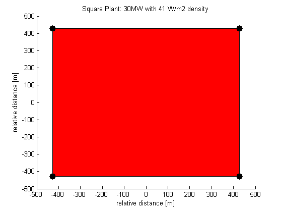
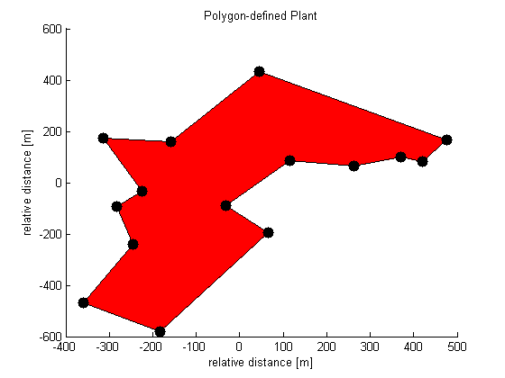
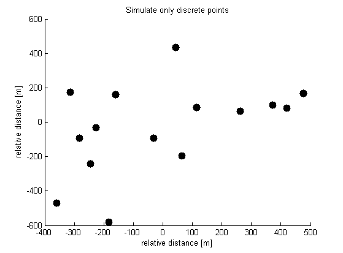

What the WVM does
WVM Code Syntax and Required Inputs
Examples
Determining the Cloud Speed
Convert WVM Smoothed Irradiance to Power Output
References
BSD License
What the WVM does
The WVM models the average irradiance over a PV plant footprint. It does this by smoothing the measurements from an irradiance points sensor by different amounts at different timescales. The WVM smoothed irradiance can be used with irradiance to power translation methods to create simulated PV plant power output. To run the WVM, you need measurements from an irradiance point sensor, some information about the PV plant you'd like to simulate (see code syntax section and examples section below), and the cloud speed. See reference [1] for more details.
WVM Code Syntax and Required Inputs
Note: you'll need the PV_Lib toolbox installed on your computer to run the WVM. If you don't already have it, get the PV_Lib toolbox here.
smooth_irradiance = pvl_WVM(irr_sensor, plantinfo, cloud_speed)
computes the spatially-smoothed irradiance using the wavelet variability model.
irr_sensor is a struct with variables:
irr_sensor.irr the irradiance measurement
irr_sensor.time the time stamps (Matlab time vector) for irr_sensor.irr
irr_sensor.Lat latitude of the sensor
irr_sensor.Lon longitude of the sensor
irr_sensor.alt altitude of the sensor
irr_sensor.tilt tilt angle of the sensor, 0 = flat (e.g., GHI)
irr_sensor.azimuth azimuth angle of the sensor, 180 = due south
(optional) irr.sensor.clear_sky_irradiance manually enter the clear-sky irradiance (e.g., for an irradiance sensor on a tracking system)
irr_sensor.UTCoffset UTC offset
plantinfo is a struct describing the plant to simulate with variables:
plantinfo.tilt tilt angle of plant modules
plantinfo.azimuth azimuth angle of plant modules
(optional) plantinfo.clear_sky_irrPOA manually enter the clear-sky irradiance in the module POA (e.g., for tracking systems)
plantinfo.type 'square','polygon', or 'discrete'
'square' square PV plant with specified number of MWs and PV density
'polygon' custom PV plant shape (define vetiticies in lat/lon)
'discrete' simulate only certain points (e.g., to replicate output of multiple point sensors)
plantinfo.MW MW of PV installed (not necessary for 'discrete' type)
plantinfo.PVdensity W PV installed per m2 in plant area (e.g., 41 W/m2 is 1MW per 6 acres) (not necessary for 'discrete' type)
plantinfo.Lat (only needed for type 'polygon' or 'discrete') latitude of polygon verticies or discrete points
plantinfo.Lon (only needed for type 'polygon' or 'discrete') longitude of polygon verticies or discrete points
cloud_speed is a single value of the daily cloud speed
smooth_irradiance is the WVM smoothed irradiance representing the average irradiance over the plant footprint. It maintains the time stamps of the input irradiance (irr_sensor.time).
Examples
There are three basic ways to model the PV power plant:
This is the easiest method and requires only the plant MW rating and the PV density. A PV density of 41 W/m2 corresponds to 1MW per 6 acres, which is a common rule of thumb for PV plants.

This setting allows you to simulate a PV plant that is not a square-shape by providing the latitude and longitude of the polygon vertices corresponding to the plant footprint.

This setting simulates the average irradiance measured using a network of irradiance point sensors. The WVM output on this setting will not be the average irradiance over the whole footprint, but rather the average of only the discrete locations of the point sensors. The user provides the latitude and longitude of the points to simulate.

1. Lave, M.; Kleissl, J.; Stein, J.S., "A Wavelet-Based Variability Model (WVM) for Solar PV Power Plants," Sustainable Energy, IEEE Transactions on , vol.4, no.2, pp.501,509, April 2013, doi: 10.1109/TSTE.2012.2205716
2. Lave, M.; Kleissl, J; "Cloud speed impact on solar variability scaling - Application to the wavelet variability model", Solar Energy, Volume 91, May 2013, Pages 11-21, ISSN 0038-092X, http://dx.doi.org/10.1016/j.solener.2013.01.023.
3. J.L. Bosch, Y. Zheng, J. Kleissl, Deriving cloud velocity from an array of solar radiation measurements, Solar Energy, Volume 87, January 2013, Pages 196-203, ISSN 0038-092X, http://dx.doi.org/10.1016/j.solener.2012.10.020.
(http://www.sciencedirect.com/science/article/pii/S0038092X12003854)
BSD License
Copyright (c) 2012, The Regents of the University of California
All rights reserved.
Redistribution and use in source and binary forms, with or without modification, are permitted provided that the following conditions are met:
Redistributions of source code must retain the above copyright notice, this list of conditions and the following disclaimer.
Redistributions in binary form must reproduce the above copyright notice, this list of conditions and the following disclaimer in the documentation and/or other materials provided with the distribution.
Neither the name The Regents of the University of California, the names of its campuses nor any abbreviation thereof, nor the names of the contributors may be used to endorse or promote products derived from this software without specific prior written permission.
THIS SOFTWARE IS PROVIDED BY THE COPYRIGHT HOLDERS AND CONTRIBUTORS "AS IS" AND ANY EXPRESS OR IMPLIED WARRANTIES, INCLUDING, BUT NOT LIMITED TO, THE IMPLIED WARRANTIES OF MERCHANTABILITY AND FITNESS FOR A PARTICULAR PURPOSE ARE DISCLAIMED. IN NO EVENT SHALL THE COPYRIGHT HOLDER OR CONTRIBUTORS BE LIABLE FOR ANY DIRECT, INDIRECT, INCIDENTAL, SPECIAL, EXEMPLARY, OR CONSEQUENTIAL DAMAGES (INCLUDING, BUT NOT LIMITED TO, PROCUREMENT OF SUBSTITUTE GOODS OR SERVICES; LOSS OF USE, DATA, OR PROFITS; OR BUSINESS INTERRUPTION) HOWEVER CAUSED AND ON ANY THEORY OF LIABILITY, WHETHER IN CONTRACT, STRICT LIABILITY, OR TORT (INCLUDING NEGLIGENCE OR OTHERWISE) ARISING IN ANY WAY OUT OF THE USE OF THIS SOFTWARE, EVEN IF ADVISED OF THE POSSIBILITY OF SUCH DAMAGE.